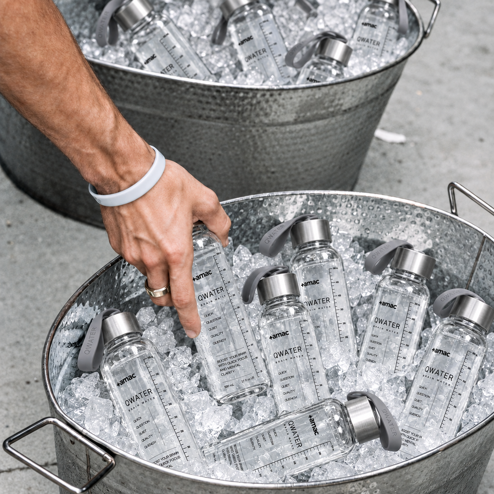
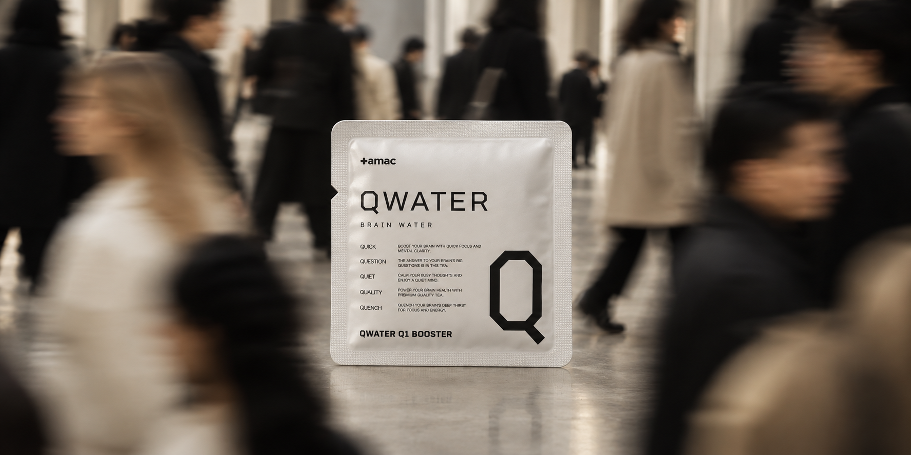
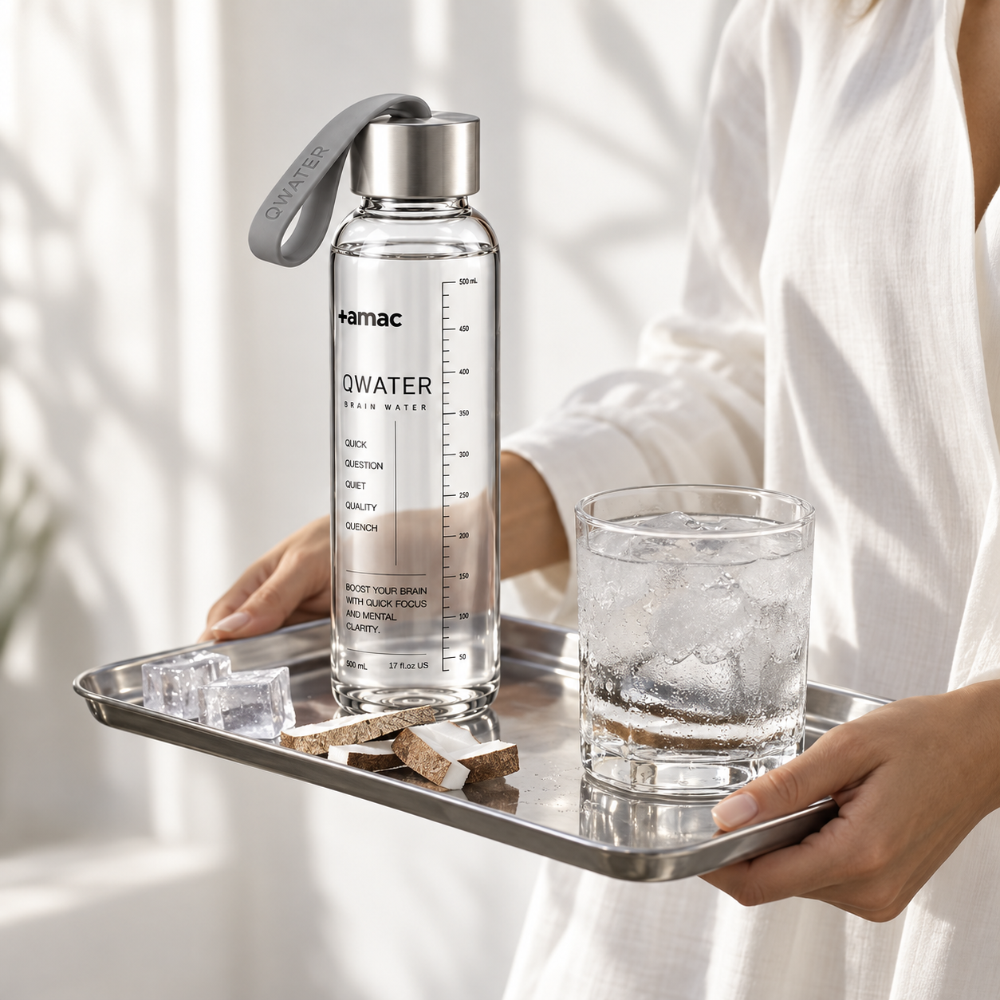
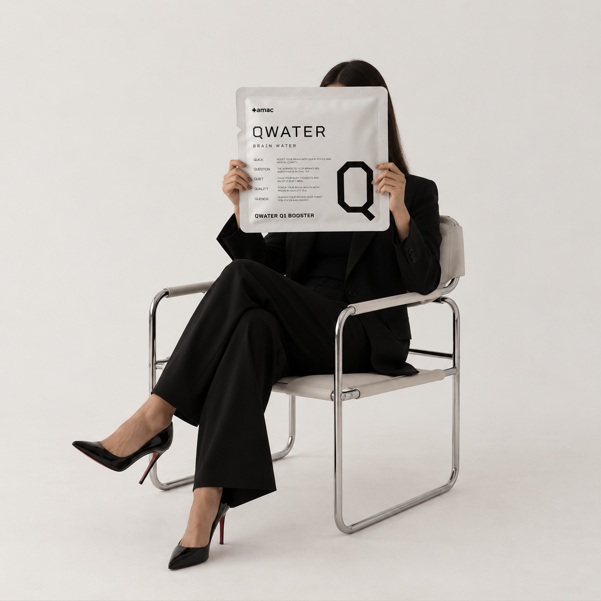
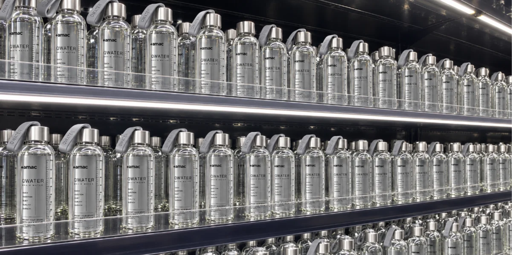

THE FORMULA IS BIGGER
THAN ONE INGREDIENT.
소비자는 종종 하나의 유명 성분을 찾습니다.
AMAC는 용량, 조합, 시간, 맛, 용해성, 안정성과 실제 사용 습관까지 함께 봅니다.
Formula는 원료 목록이 아니라 전체 설계입니다.
Consumers often search for one famous ingredient.
AMAC looks at dosage, combination, timing, taste, solubility, stability and how the product is actually used.
A formula is not an ingredient list. It is a complete design.

EVIDENCE
BEFORE HYPE.
새로운 성분이라는 이유만으로 사용하지 않습니다.
논문이 있다는 이유만으로 모든 효능을 인정하지도 않습니다.
AMAC는 근거가 광고보다 먼저 도착한 성분을 선택합니다.
We do not use an ingredient simply because it is new.
And the existence of a paper does not automatically prove every claimed benefit.
AMAC chooses ingredients when the evidence arrives before the hype.
REORDER
THE RITUAL.
재구매의 이유가 재고가 떨어졌기 때문만이어서는 안 됩니다.
Q1과 Q2가 이미 자신의 하루 속 특정 위치를 차지하게 만드는 것이 중요합니다.
사람은 제품보다 익숙해진 루틴을 다시 주문합니다.
Reordering should mean more than simply running out.
Q1 and Q2 should already occupy a clear place in your day.
People do not only reorder products. They reorder rituals that have become familiar.

SOLUBILITY IS PART
OF THE SCIENCE.
좋은 원료도 물에 제대로 섞이지 않으면 매일 사용하기 어렵습니다.
QWATER는 성분뿐 아니라 용해 속도와 침전, 실제 음용감까지 함께 확인합니다.
포뮬러는 마시는 순간까지 완성되어야 합니다.
Even good ingredients are difficult to use daily if they do not dissolve properly.
QWATER considers dissolution, sedimentation and the actual drinking experience.
A formula is not complete until the moment you drink it.

THE DOSE MATTERS
MORE THAN THE NAME.
유명한 성분을 넣었다는 사실만으로는 충분하지 않습니다.
중요한 것은 실제로 얼마가 들어 있으며, 그 양을 어떤 근거로 결정했는가입니다.
QWATER는 이름보다 함량을 먼저 설명합니다.
Including a well-known ingredient is not enough.
What matters is how much is actually included—and what evidence informed that amount.
QWATER explains the dose before promoting the name.

MORE INGREDIENTS DO
NOT GUARANTEE SYNERGY.
성분이 많다는 이유만으로 더 정교한 포뮬러가 되는 것은 아닙니다.
AMAC는 각 원료의 역할과 중복, 섭취 시점과 전체 균형을 함께 검토합니다.
좋은 설계는 더하는 것만큼 덜어내는 판단이 중요합니다.
More ingredients do not automatically create a more sophisticated formula.
AMAC considers each ingredient’s role, overlap, timing and overall balance.
Good formulation requires knowing what to remove as well as what to add.
STABILITY MATTERS
OVER TIME.
제품은 제조된 순간뿐 아니라 보관되는 시간 동안에도 기준을 유지해야 합니다.
AMAC는 맛과 색, 용해성 그리고 주요 성분의 안정성을 지속해서 확인합니다.
과학은 처음의 완성도가 아니라 끝까지 유지되는 품질입니다.
A product should maintain its standard beyond the day it is made.
AMAC monitors taste, color, solubility and the stability of key ingredients over time.
Science is not only how a formula begins, but how well it holds.

DRINK
YOUR STATE.
하루를 완벽하게 통제할 수는 없습니다.
하지만 다음에 어떤 상태로 이동할 것인지는 의식적으로 선택할 수 있습니다.
AMAC QWATER. Q1으로 시작하고. Q2로 마무리하십시오.
You cannot control every part of your day.
But you can make a deliberate choice about the state you move into next.
AMAC QWATER. Q1 TO BEGIN. Q2 TO CLOSE.